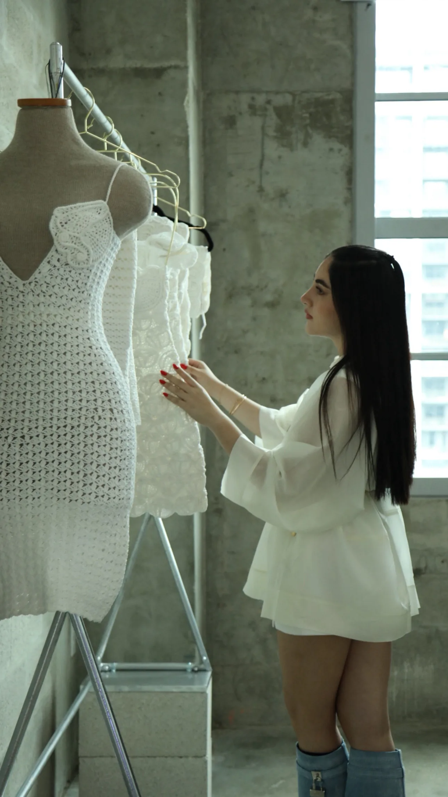
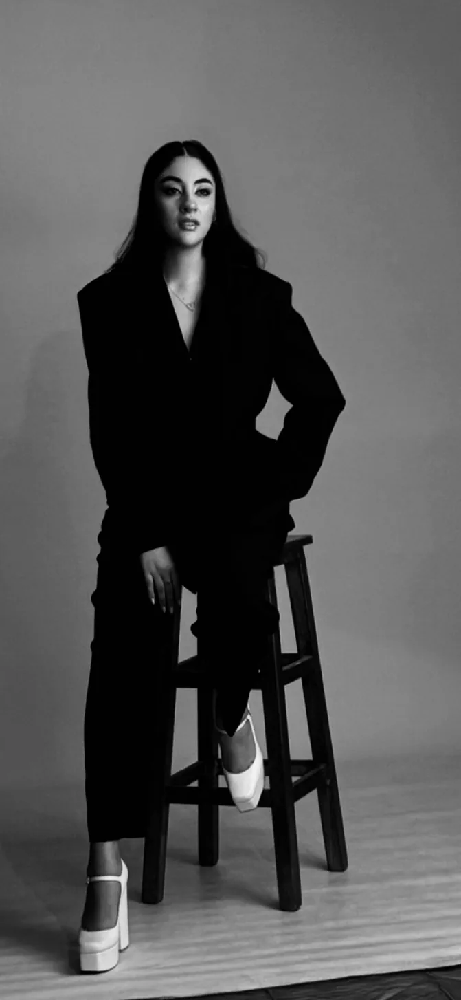
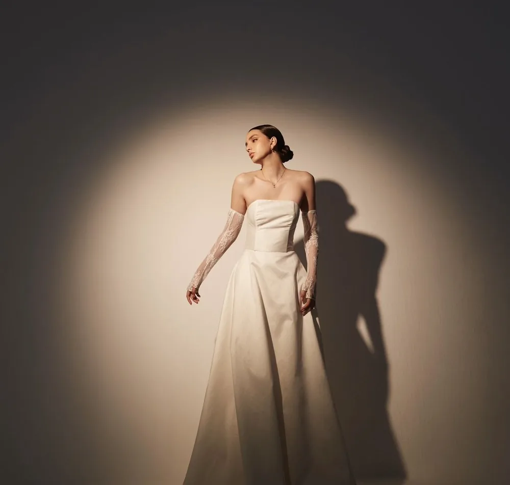
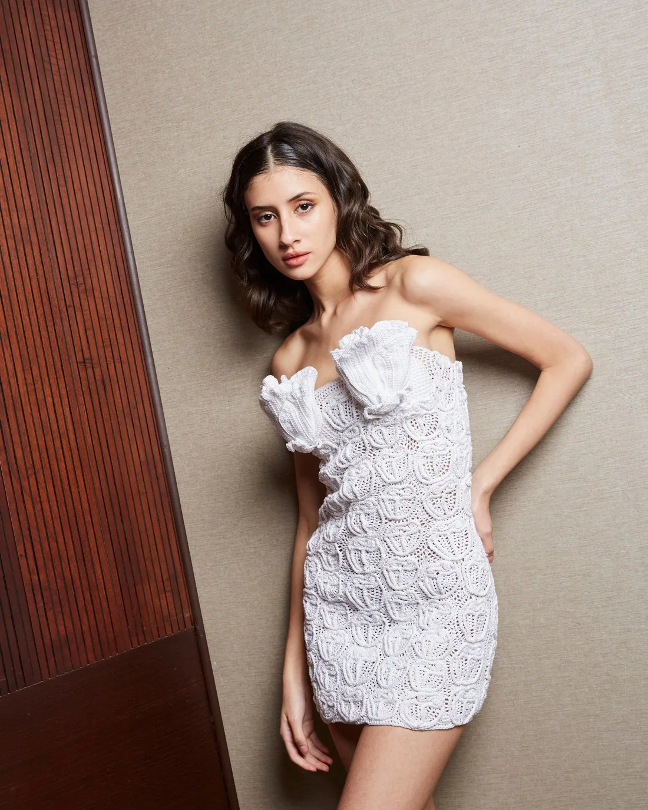
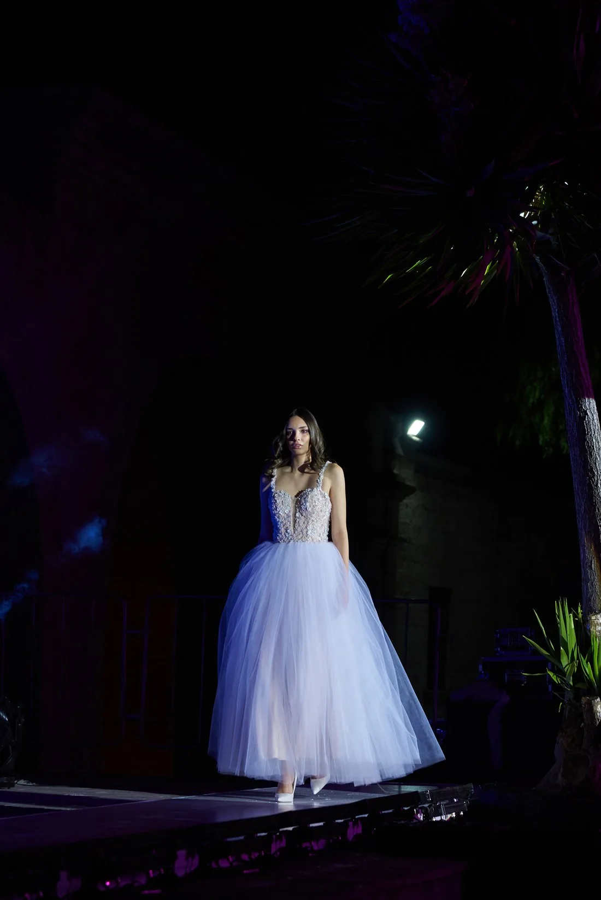
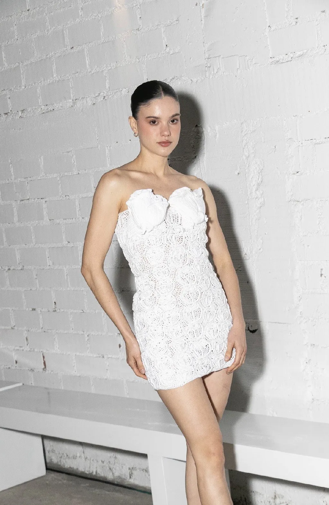

Alta costura · Arequipa, Perú
Prendas que cuentan historias
Alta costura nupcial y resort wear, hecha a mano pieza por pieza desde Arequipa para el mundo.

Daniela Coloma — Atelier, Arequipa

La marca
Diseño con propósito
Cada prenda nace de una combinación entre creatividad, sensibilidad y estrategia — diseños atemporales que celebran la individualidad y generan una conexión auténtica con quienes las llevan.
Colaboramos con artesanas locales para crear piezas nupciales, prêt-à-porter y tejidas, presentadas en Perú y Miami.
Daniela Coloma Corrales
Creo en la moda como una forma de contar historias.
Soy diseñadora de moda con formación internacional en Lima, Madrid y París, especializada en dirección creativa, desarrollo de colecciones y construcción de marcas con identidad.
A lo largo de mi trayectoria he presentado colecciones en Perú y Miami, desarrollando propuestas prêt-à-porter, novias y colecciones tejidas en colaboración con artesanas, siempre buscando crear piezas que conecten con las emociones, la autenticidad y la esencia de quien las viste.
Fui reconocida dentro del Top 50 de Forbes Perú, un hito que reafirma mi compromiso con la innovación, el emprendimiento y el impacto dentro de la industria de la moda. Sin embargo, mi mayor inspiración sigue siendo la misma: diseñar para mujeres que desean expresarse con libertad, confianza y propósito.
Mi visión va más allá de crear prendas. Busco construir historias que empoderen, inspiren y acompañen a cada mujer en los momentos que marcan su vida. Cada colección nace de una combinación entre creatividad, sensibilidad y estrategia, con el objetivo de crear diseños atemporales que celebren la individualidad y generen una conexión auténtica con quienes los llevan.

Selección
Colecciones

2024 · Lima · Crucero
Dalum
El verano reinterpretado con lujo refinado, inspirado en la energía y el encanto de Tulum.
2025 · Arequipa · Alta costura nupcial
Le Blanc
Inspirada en la Ciudad Blanca de Arequipa: pureza, feminidad y lujo contemporáneo para la mujer que se casa.


2025 · Miami Swim Week · Tejido a mano
Love Language
Tejida a mano pieza por pieza, esta colección impulsa el trabajo de artesanas locales emprendedoras.
2025 · Plaza de Yanahuara, Arequipa · Desfile benéfico
Aurat
Inspirada en la fuerza y la esencia de la mujer peruana — lo recaudado se destinó íntegramente a mujeres sobrevivientes de violencia.


Diseñamos para mujeres que desean expresarse con libertad, confianza y propósito.
Daniela Coloma
I
Sostenibilidad
Todo hecho a pedido — sin excesos, sin desperdicio. Cada prenda tiene destino antes de existir.
II
Artesanía
Colaboramos con artesanas peruanas cuyo trabajo es el alma de cada colección tejida.
III
Identidad
Formación en Lima, Madrid y París. La técnica internacional al servicio de la identidad peruana.